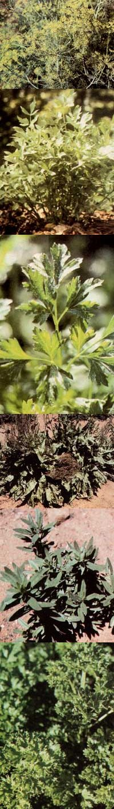

Along about March-when your tastebuds are a tad tired of canned goods and you'd almost be willing to swap a week's work for a fresh-from-the-garden salad-it seems like it'll be an eternity before the too-wet-to-till growing ground will be able to produce crispy greens. Well, take heart . . . because I'm going to tell you about a group of saladmakers that can be planted in the call . . . wintered-over beneath a layer of mulch . . . and harvested long before the springplanted vegetables are ready. And-to top things off-I'm going to give you a list of perennial herbs that can add beauty to your garden while they're contributing color, texture, and flavor to your dinner plate.
LETTUCE BEGIN
Of course, lettuce is traditionally considered the basic salad ingredient, and there are-fortunately-several varieties of the leafy vegetable that can be sown in the fall for early spring picking. Arctic King (J.L. Hudson), for instance, produces large heads with crisp, crinkly leaves . . . while All Year Round (Unwins, Redwood City) yields compact heads and can be sown again in the spring for an early summer crop . . . and Imperial Winter (Unwins, Redwood City) is a fine loose-head variety.
SNOW JOB
I recall my father's telling me about an old-timer who always sowed his leaf lettuce on top of a late spring snow. As the drifts melted, the seed sank into the soft, moist earth and germinated ... so every year this clever gardener had lettuce weeks before anyone else did! You can also plant hardy lettuce (except in the very coldest parts of the country) in November. The seeds will overwinter nicely, and then sprout at the first hint of spring!
FROZEN FOODS
Fall planting isn't limited to lettuce, of course. Such superhardy spinach varieties as Winter Bloomsdale (Burpee) and ColdResistant Savoy (Stokes) can be sown in the autumn and harvested all spring long. The succulent dark green leaves are delicious raw (in salads) or cooked.
You may also be interested to know that Unwins offers some remarkable new Japanese onions that are intended for autumn sowing only. The crop matures by mid-June and nicely fills the gap between the time when most folks run out of winterstorage onions and the day when the first of the new year's planting can be eaten. Order Express Yellow O-X, Imai Yellow, or Senshyu from the fine old seed house.
For those who like 'em slim and spicy, bunching onions-or scallions-are the answer. Try Japanese Bunching (Harris), Hardy White Bunching (Stokes), or Evergreen Long White Bunching (Burpee, Park) . . . they're all delicious!
When it comes to decorating a plate- and adding superior flavor to many dishes-parsley can't be beat. Both the curled and the flat-leaf forms are slow to germinate, but-if they're planted just before the first frost-the chill winter weather will help break the seeds' dormancy. Darki and Bravour (both available from Stokes) exhibit good cold-weather tolerance.
And, while you're planting parsley, scatter a few Dill Bouquet seeds (Park) in the winter garden, too. This shorter, bushier form of the tasty herb won't topple over when the spring breezes roar.
PERENNIAL FAVORITES
Ornamental perennial herbs can-supply flavor to your spring salads and add beauty to your garden plots ... and many of the tasty plants will grow well in partial shade. Lovage, for example, needs screening from the sun, as well as a moist, rich soil. The leaves, stems, and seeds of this plant (which resembles a giant flat-leaved parsley) taste like celery . . . and can all be used, fresh or dried, in cooked foods or salads.
Hyssop is an undemanding herb, growing contentedly in sun or shade and in any well-drained soil. The leaves add a taste of mint to meals, and the plants can be used to form a decorative two-foot hedge that's covered with blossoms all summer long.
The foliage of lemon balm, on the other hand, adds a citruslike tang to food, and the plant stays green until hard frost. Light shade is preferred . . . and a poor, dry soil will concentrate the herb's lemony flavor. (I've found that clipping the flower stalks prevents self-seeding and keeps the herb from spreading out of control.)
Sweet cicely-another lover of shade-does best when grown in moist, slightly acid soil. The fragrant, fernlike herb provides aniseflavored seeds (used fresh or dried for baking) and leaves (snipped fresh into salads or onto fish).
French cuisine would be immeasurably poorer without sorrel. The tart, tangy foliage enhances salads, seafoods, and even cottage cheese ... while the steamed greens blend well with spinach or Swiss chard, and make a superior creamed soup. (As with lemon balm, it's best to prune the flower stalks to keep sorrel in bounds and stimulate the growth of succulent new leaves.) A moist, rich soil-with some afternoon shade-will provide ideal growing conditions.
Burnet is an essential ingredient in both French and Italian salads. The leaves impart a cucumberlike flavor, and they're ready for eating long before the heat-loving picklemakers have grown to fruiting size . . . and long after the elongated taste alikes are cut down by frost. Plant the seeds in rich, moist soil where they'll get full sun to raise clumps of burnet a foot and a half high. (As with many other perennials, occasional pruning stimulates new growth.)
If you want a splash of color in your garden and salads, borage can do the job . . . since the herb's bright blossoms are edible! Plant the seeds in any well-drained soil that receives sun for at least part of the day, and you'll be rewarded by twofoot plants that spread to a width of four feet and are covered with blue, starshaped flowers. Borage-unlike the other ornamental varieties listed here-is an annual ... but it self-seeds so prolifically that you'll never have to sow it again!
Of course, by doing your salad planting in the fall, you'll free up flats for the vegetables that must be started in the spring . . . such as tomatoes, peppers, eggplant, and squash. And-while your neighbors are looking longingly at the dollar-a-head lettuce in the supermarket's produce bins-you'll be able to celebrate the vernal equinox with a big bowl of crisp, tasty, homegrown greens!
EDITOR'S NOTE: Vegetable seeds for the varieties mentioned in this article may be purchased from the following sources:
J.L. Hudson
Dept. TMEN
Box 1058
Redwood City, California 94064
Redwood City Seed Co.
Dept. TMEN
P.O. Box 361
Redwood City, California 94064
U nwins
Dept. TMEN
P.O. Box 9
Farmingdale, New Jersey 07727
Burpee Seed Co.
Dept. TMEN
Warminster, Pennsylvania 18991
or Clinton, Iowa 52732
or Riverside, California 92502
George W. Park Seed Co.
Dept. TMEN
Box 31
Greenwood, South Carolina 29647
Stokes Seeds
Dept. TMEN
737 Main Street, Box 548
Buffalo, New York 14240
Seeds for the perennial herbs are available from Nichols Garden Nursery, Dept. TMEN, 1190 North Pacific Highway, Albany, Oregon 97321. Started plants may be ordered from Taylor's Herb Garden, Inc., Dept. TMEN, 1535 Lone Oak Road, Vista, California 92803.
|
 Dill Bouquet, which is shorter (and sturdier) than most varieties of the popular cooking, salad, and pickling herb, responds well to winter planting... Lovage, a hardy perennial that produces abundant leaves and stalks that taste similar to celery, is both attractive and useful... Wintertime freezes will help break the dormancy of flat-leaved parsley's seeds and the lively flavored little green will produce an early crop come the following spring... French sorrel (it's related to our commonly foraged sheep sorrel ""weed"") is a tart-tasting early leafing perennial... Hyssop adds a minty flavor to meals and can also be used to form a decorative two-foot-high hedge.... Curly-leaved parsley is another herb that takes well to cold weather sowing. |
|
|